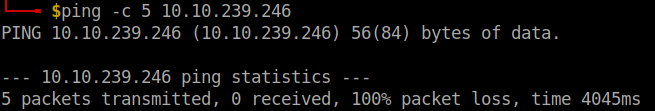
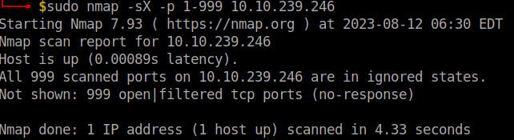

Nmap
Today I am starting Nmap project, testing and playing around scanning devices.
First, there are 65535 open ports available on any network-enabled computer, and 1024 of them are well-known.
Key flags to keep in mind:
| Flags | Description |
|---|---|
| -sS | Half-open or stealth scan, which has similar function to TCP scan. Key difference between the two scan is that TCP scan performs. |
| -sT | TCP connect scans, which performs 3-way handshake. |
| -sU | UDP connect scans, which doesn’t rely on the handshake. |
| -sN | NULL scans, TCP request is sent with no flag set at all, and receives RST if port is closed. |
| -sX | Xmas scans, sends malformed TCP packet and expects RST response for closed ports. It is called Xmas, as it sends(PSH, URG and FIN) which give it the appearance of a blinking Christmas tree. |
| -sF | FIN scans, similar to the NULL scan, but sends with a FIN flag. |
| -O | Detects which operating system the target is running. |
| -sV | Detects the version of the services running on the target. |
| -v, vv, vvv | Verbosity is used to scan with in depth details. |
| -oA | Outputs Nmap results in three major formats. |
| -oN | Saves Nmap results in normal format. |
| -oG | Saves Nmap results in gerpable format. |
| -A | Aggressive mode, which activates service detection, operating system, traceroute, and script scanning. |
| -T1-5 | Timer template from level 1-5. |
| -p | Port scan, can be used to specify the ports to be scanned. |
| -p- | All ports scan, as the name suggest it scans all open ports. |
| –script | Activates Nmap scripts. |
| -sn | Ping sweep, depends on ICMP message, which is sent to all specified IP addresses. |
| -Pn | Tells Nmap to scan without pinging the target in other words Nmap assumes that the target is alive. |
| -f | Used to fragment the packets. |
| –mtu | Similar to the use of fragmented packet, but allows you to control the size of the packet. |
| –scan-delay ms | Used to add a delay between packets sent. |
| –badsum | Used to generate in invalid checksum for packets. However, firewalls might respond automatically, without bothering to check the checksum of the packet. Which allows this flag to check the presence of firewall/IDS. |
The Nmap Scripting Engine (NSE) is an incredibly powerful addition to Nmap, extending its functionality quite considerably. NSE Scripts are written in the Lua programming language, and can be used to do a variety of things: from scanning for vulnerabilities, to automating exploits for them. The NSE is particularly useful for reconnaissance, however, it is well worth bearing in mind how extensive the script library is.
• safe: Won't affect the target
• intrusive: Not safe: likely to affect the target
• vuln: Scan for vulnerabilities
• exploit: Attempt to exploit a vulnerability
• auth: Attempt to bypass authentication for running services (e.g. Log into an FTP server anonymously)
• brute: Attempt to brute force credentials for running services
• discovery: Attempt to query running services for further information about the network (e.g. query an SNMP server).
Example: –script= or –script=vuln. Multiple scripts can be run at the same time using the following command: <–script=smb-enum-users,smb-enum-shares>.
Some scripts requires arguments to run, like credentials, if they’re exploiting an authenticated vulnerability. Which can be done using –script-args Nmap switch. Example, nmap -p 80 –script http-put –script-args http-put.url=’/dav/shell.php’,http-put.file’./shell.php'.
Note that the arguments are separated by commas, and connected to the corresponding script with periods .. For extra help regarding scripts, you can type the following command nmap –script-help .
Nmap has a formatted text file containing filenames and categories for each available script, which we can search for and find in the following directory: /usr/share/nmap/scripts/script.db. There are two ways to search for scripts in the Nmap script.db, either grep “gtp” /usr/share/nmap/scripts/script.db or ls -l /usr/share/nmap/scripts/ftp. The following reference is to search for all nmap scripts and libraries: https://nmap.org/nsedoc/.
Ways to install/update script list: 1-sudo apt update && sudo apt install nmap 2-sudo wget -O /usr/share/nmap/scripts/.nse https:/svb.nmap.org/nmap/scripts/.nse follow by nmap –script-updatedb.
Practical Lab:⌗
First, I pinged the target using ping -c 5 10.10.239.246 to check if the target responds with an ICMP message, after using ping -h to check all available flags. -c flag is used to stop pinging the target after a certain number of replied, which in that case I chose 5.

And according to the results shown, the target didn’t even receive the packets. Next, I checked if the first 999 ports are open/filtered using Xmas scan and specifying the number of ports to be scanned using -p.

Which showed the ports to be open, but in ignored state. Then, I noticed that I was facing issue with my openvpn, which was resolved by regenerating a new openvpn file configuration on TryHackMe. Next, I rerun the nmap scans again to check the open ports using TCP scan, which revealed 5 open ports:
For the final part, I used nmap –script to check port 21 FTP and check if I can possible use it to login into the target, and then logged in using anonymous username.